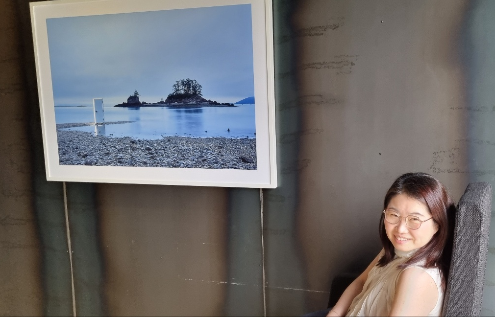

Hyunah Ahn, Ph.D.
Hi, I'm an Assistant Professor in the Department of English Language and Literature at Kunsan National University in Gunsan, Korea. I conduct experimental research on language phenomena that occur when Koreans acquire English as a second language and when English speakers acquire Korean as a second language.
If you have any questions about my research and/or courses, please contact me at hyunah at kunsan dot ac dot kr.